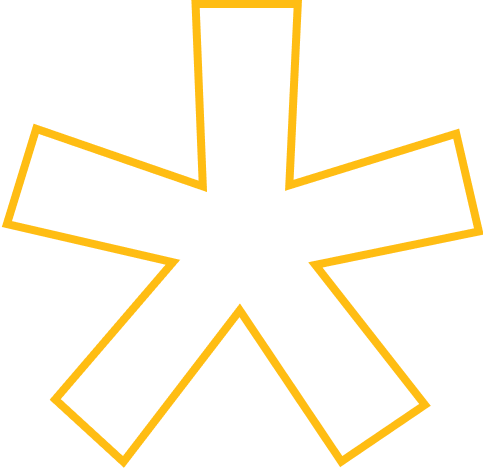
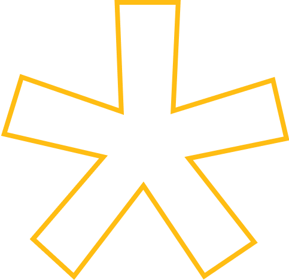

team
Scout Labs
.png)
.png)
Our mission
Scout Labs brings together a multidisciplinary team of students with varying skill sets, ways of thinking, and academic backgrounds to solve pressing problems in our community. Simply put, we believe in the power of design for social change! Through our projects, we aim to build connections and co-create solutions with the people of Boston.
What we do
The Labs team partners with the City of Boston Mayor's Office of New Urban Mechanics to research civic issues in our city and prototype creative solutions. We implement a human-centered design method and engage members of the community in our process at every possible point. We approach each problem statement with a solutions-agnostic lens, using our research findings to inform our final design solution.
.png)
.png)
.png)
.png)
Our process
Empathize
So how do we start? We observe, engage, and immerse ourselves in our design challenge by learning from relevant stakeholders through interviews, surveys, and workshops. We also aim to understand the existing body of knowledge in the field by talking with field experts and conducting literature reviews.
Define
In this stage, we analyze and synthesize our research findings to define the core problem we're trying to solve. This problem statement will guide the rest of our design process and kickstart the ideation stage.
Ideate
Here's where we throw things at the wall and see what sticks! The team collaboratively brainstorms ideas for solving our newly defined problem. At this stage of the game, we try to think as freely as possible, and aim to push ourselves outside of the box in a lot of different ways.
Prototype
This is where our ideas take form! We construct rapid prototypes, or scaled-down versions of our solutions, to allow our team to experiment with our most promising ideas from the previous stage.
Test
Time to put our work out there! We iteratively test the prototypes with members of the larger community. Feedback gained during this phase allows us to refine our prototypes and develop a final solution.
Repeat.
.png) 

Our most recent project
City Hall Student Action Portal
From interviewing state senators to running workshops with over fifty middle school students across Boston, our Labs team spent a year working with the City of Boston's Mayor's Office of New Urban Mechanics to design and develop a new website to help students to meaningfully engage with people in City Hall.
Get involved
Labs Director
Scout’s Labs Director champions human-centered design thinking by managing an interdisciplinary team through the ambiguous design thinking process to create social impact in a partnership with the Boston Mayor’s Office of New Urban Mechanics.
Design Strategist
Work with the City of Boston Mayor’s Office of New Urban Mechanics on a civic research and design project, using a human-centered design process to develop creative solutions for our project focus.
Project Lead
Work with the City of Boston Mayor’s Office of New Urban Mechanics on a civic research and design project, using a human-centered design process to develop creative solutions for our project focus.

Wanna stay in the loop?
Join our mailing list!
Scout is Northeastern’s student-led design studio. We're happy to have you!
.png) Ryder Hall 307
Ryder Hall 307
.png) scout@northeastern.edu
scout@northeastern.edu
Made with love and support from:
Northeastern University
Scout © 2021